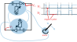
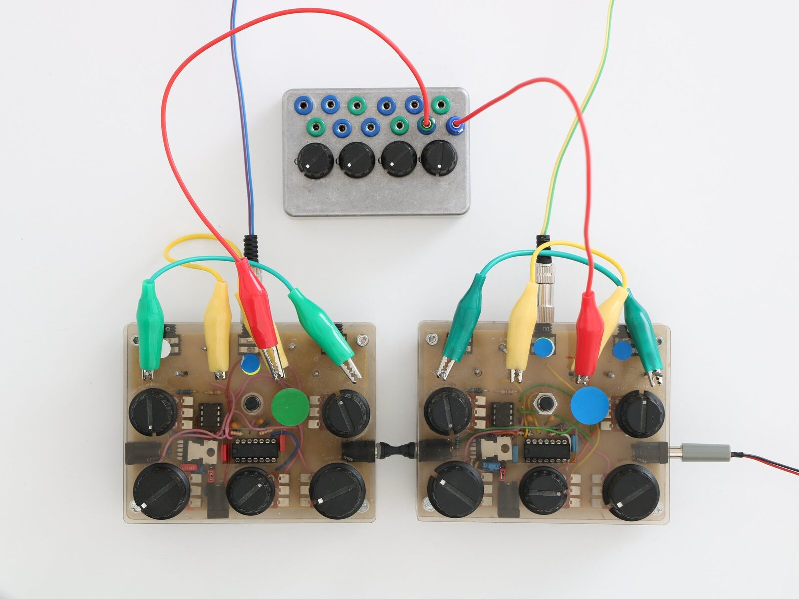
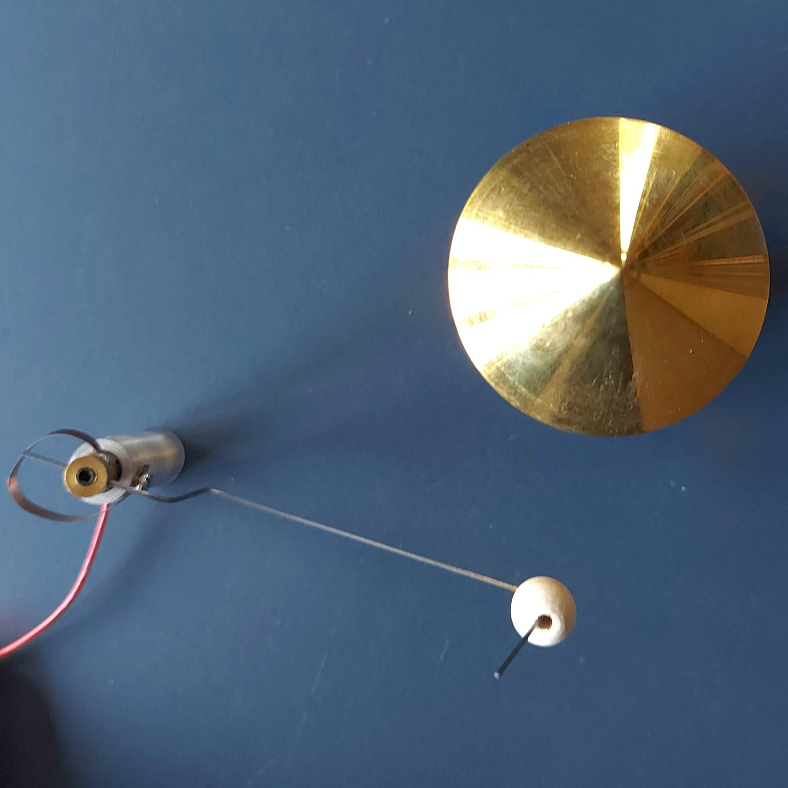
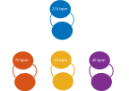
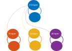
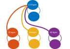
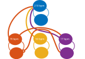

Emergent Polyrhythmic Patterns with a Neuromorph Electronic Network
Abstract
In this paper I show how it is possible to create polyrhythmic patterns with analogue oscillators by setting up a network of variable resistances that connect these oscillators. The system I present is build with electronic circuits connected to dc-motors and allows for a very tangible and playful exploration of the dynamic properties of artificial neural networks. The theoretical underpinnings of this approach stem from observation and models of synchronization in living organisms, where synchronization and phase-locking is not only an observable phenomenon but can also be seen as a marker of the quality of interaction. Realized as a technical system of analogue oscillators synchronization also appears between oscillators tuned at different basic rhythm and stable polyrhythmic patterns emerge as the result of electrical connections.
Author Keywords
Analogue Computing, Neuromorph Computing, Polyrhythm, Emergence
CCS Concepts
•Applied computing → Sound and music computing;
•Arts and humanities→Media arts;
Introduction
Playing to learn, learning to play, what a great topic for this years NIME conference. The systems I present here have evolved through a process of continuous playing and learning. My basic attitude during learning and playing is captured by the song noch einmal from Ester Brinkmann on the record “totes Rennen”. This track features loops created on a turntable and one such loop is an audio recording from the cybernetician Heinz v. Förster who states: “please never say: this is boring, i know this already, this is the biggest catastrophe, always say: i want to experience this again.1” This plea for enjoying repetition is a mode of playing and learning I subscribe to.
I presented the rhythm apparatus, a robotic device for creating rhythmical sounds, at the NIME conference in 2014 [1], a previous iteration of doing the same thing over and over again. My focus has shifted from embodiment towards emergent synchronization as a unique feature of analogue computation [2].
The behavior of neurons in organisms is the basic metaphor of the electronic hardware and the circuits I am using. This approach of implementing specific features of neural computation in electronic hardware has been framed under the label of neuromorph computation [3] . The circuit, I have been playing and learning with over the last twenty years, has been developed in the nineties by Mark W. Tilden as central pattern generators for walking robots [4]. These artificial neural networks of circularly connected electronic units produce coordinated rhythmical patterns. There is a huge body of work in the field of computational neuroscience studying the dynamics of such networks dating back to early works by Norbert Wiener and Arturo [5] to electronic circuits [6], based on oscillatory neural models [7].
Using neural networks for the generation of musical patterns and compositions is a key topic in the NIME community. Recent advances in machine learning and computing technology allow for embedded devices that use recurrent neural networks to generate audio in real-time [8] or online during laptop performances [9]. However these networks cannot produce the dynamical properties of biological neural networks ,because time is discrete and the focus of theses systems is on learning the statistics of time series in order to regenerate audio based on previous data.
Closer to the current approach are the works by Oliver Bown and Stefan Ianigro [10] and by Kerlleñevich et al. [11], because both explore the intrinsic dynamics in neural networks. While the system proposed by Bown and Ianigro focuses on training the weights of a recurrent dynamical neural network using a genetic algorithm in order to produce new sounds, the system proposed by Kerlleñevich et. al. examined how to enable interaction with a dynamical model of neural network .
The focus of the current contribution is on the specific dynamic properties of oscillating artificial neural networks and the very tangible way of playing with such networks when they are implemented as electronic hardware.
Controlling Motor movement with neurally inspired oscillators
The basic circuit,is called bi-core and was developed by Mark W. Tilden. It produces an oscillatory pattern by connecting two simple units into a feedback loop (see Figure 1).


Schematic of the bi-core circuit controlling left and right sway of a motor with a spring element. The timing of the signals V1 and V2 depend on the values of the variable resistors and the capacitor.
When two or more bi-cores are connected to each other, synchronization effects show up as a function of the connectivity. The details of these electronic circuits and how to produce sound are explained in my previous NIME contribution [1].
Creating a connection with such analog hardware means putting a wire in-between. When two bi-core oscillators are connected simply with a wire they will go either into synchrony. Two bi-cores will synchronize even if their frequencies don’t match.
It is more interesting if the bi-cores are connected through variable resistors instead of plain wires, the degree of mutual interaction becomes a parameter to play with (see Figure 2. ). Being connected through a variable resistor allows to synchronize bi-cores at different frequencies, so that they match at every n-th beat. The possibilities of these configuration are explored in a previous publication [12].


Two Bi-cores connected through a patch-field with potentiometers to adust the amount of connectivity.
Playing with the connectivity
I play with the following experimental setup: I am using four bi-core oscillators. One is setting the reference beat at 210 beats per Minute. The three other oscillators are controlling three motors that are hitting against RIN-Bells, produced by the japanese company RIN Bell Percussion Otsuka Factory (see Figure 3. ).


Motor with a spring element that hits on Bell from RIN Bell Percussion Otsuka Factory
Each of these oscillators is set to an approximate frequency to produce three different ratios with respect to the reference beat every third beat (70 bpm), every forth beat (50 bpm) and every fifth beat (40 bpm). To show how the connectivity can be used as playing parameter the system is run in three configurations: no coupling, soft coupling and full coupling. For the no-coupling condition (Figure 4) all cables between the oscillators are removed. For the soft coupling condition (Figure 6) the connections between the reference oscillator and the three other oscillators are set to 1 kiloOhm and for the strong coupling condition (Figure 8) they are set to 300 Ohm .


Configuration for the no-coupling condition, each oscillator is tuned to fixed beat.

Recording for the no coupling condition. The blue plot is the reference beat at approx. 210 bpm. One can clearly see that the patterns of the three oscillators at different fractions only match the reference oscillator by chance.


Configuration for the no-coupling condition, each oscillator is tuned to fixed beat.

Recording for the soft coupling condition. The blue plot is the reference beat at approx. 210 bpm. All three oscillators are closer to the reference oscillator, yet they don’t align.


Configuration for the strong-coupling condition. Each of the oscillators running at a fraction of the reference oscillator has a strong connection with a resistance of 300 Ohm to the reference oscillator.

Recording for the strong coupling condition. The blue plot is the reference beat at approx. 210 bpm. All three oscillators align perfectly with the reference oscillation.
The three experimental conditions show how synchronization is a function of network connectivity. In the strong coupling condition as can be seen in Figure 9 the beats of the three oscillators line up nicely with the reference beat, effectively producing a four over three over five polyrhythm. In the no-coupling condition there is no relation between the different oscillation, sometimes a beat may match with an another beat but this happens only by chance. The soft-coupling condition represents an in-between: there is a structural relation between the oscillators, however they remain not fully aligned with the reference beat.
The last experiment introduces a more complex coupling where one oscillator (17 bpm) is used to inhibit another oscillator (70 bpm) to suppress one beat at regular intervals. The frequency of the inhibiting oscillator corresponds to approximately every 12th beat.


Connectivity for a more complex coupling, a slow running oscillator running at a fraction of approximately every 12th beat of the reference oscillator connects with an inhibitory connection to the oscillator that runs at a fraction of very 3rd beat. In addition to the inhibitory connection a second strong connection between both ensures they align on every 12th beat.

Recording for the complex coupling condition, the three over four polyrhythm is well visible and also the alignment with the oscillator running at ratio of every twelfth beat with respect to the reference beat. It marks the beginning of recurring sequence.
As can be seen in Figure 11 when the slow running oscillator is aligned with the reference beat and with both other beats marking the start of a repeating sequence over 12 steps of the reference oscillator.
A new kind of machine
The preceding experiments show how it is possible to build a machine where different rhythmical patterns are not fixed or pre-programmed but emerge from the interplay of neurally inspired oscillators and their mutual connectivity. Instead of being rigid these patterns form stable polyrhythms and can be thought of attractor states in complex force fields.
The theoretical framework to explain such effects of coordination and synchronization is referred to as dynamical systems theory. It applies as well to technical systems as to natural systems. For example, the work by Schöner Haken and Kelso shows that the stochastic signatures of phase transitions occurring during manual tapping from in-phase to out counter-phase can be best explained and modeled with dynamical systems [13].
There is a huge body of experimental work around synchronization occurring in human interactions [14] [15] [16][17] and they have in common that synchronization can be considered as a marker of the quality of interaction. Based on the assumption that qualitative human interactions often entail synchronization, I see a huge potential in machines that are based on principles that also show synchronization.
Footnotes
the track can be heard on youtube: https://www.youtube.com/watch?v=h-9SVIxdrOg
↩
Citations
- ↩Faubel, C. (2014). Rhythm Apparatus on Overhead. In NIME (pp. 491–494).
- ↩Faubel, C. (2020). Subtlety is key – towards an analog utopia . Salon Digital, Spektakel: Reenactments in Kunst, Gestaltung, Wissenschaft Und Technologie.
- ↩Douglas, R., Mahowald, M., & Mead, C. (1995). Neuromorphic Analogue VLSI. Annual Review of Neuroscience, 18(1), 255–281. https://doi.org/10.1146/annurev.ne.18.030195.001351
- ↩Hasslacher, B., & Tilden, M. W. (1995). Living machines. Robotics and Autonomous Systems, 15(1), 143–169.
- ↩Wiener, N., & Rosenblueth, A. (1946). The mathematical formulation of the problem of conduction of impulses in a network of connected excitable elements, specifically in cardiac muscle. Archivos Del Instituto de Cardiologı́a de México, 16(3), 205.
- ↩Yamashita, Y., & Nakamura, Y. (2007). A neuron circuit model with smooth nonlinear output function. IEICE Proceedings Series, 41(17PM1-A-3).
- ↩Amari, S. (1977). Dynamics of pattern formation in lateral-inhibition type neural fields. Biological Cybernetics, 27(2), 77–87.
- ↩Naess, T., & Martin, C. (2019). A Physical Intelligent Instrument using Recurrent Neural Networks.
- ↩Proctor, R., & Martin, C. (2020). A Laptop Ensemble Performance System using Recurrent Neural Networks.
- ↩Ianigro, S., & Bown, O. (2018). Exploring Continuous Time Recurrent Neural Networks through Novelty Search. In NIME (pp. 108–113).
- ↩Kerllenevich, H., Riera, P., & Eguia, M. (2011). An open source interface based on biological neural networks for interactive music performance. In New Interfaces for Musical Expression.
- ↩Christian Faubel . (2020). Subtlety is key – towards an analog utopia . Salon Digital, Spektakel: Reenactments in Kunst, Gestaltung, Wissenschaft Und Technologie.
- ↩Schöner, G., Haken, H., & Kelso, J. A. S. (1986). A stochastic theory of phase transitions in human hand movement. Biological Cybernetics, 53(4), 247–257.
- ↩Wood, A., Lipson, J., Zhao, F. O., & Niedenthal, P. (2020). Forms and Functions of Affective Synchrony. https://doi.org/10.31234/osf.io/z46nd
- ↩Cornejo, C., Hurtado, E., Cuadros, Z., Torres-Araneda, A., Paredes Mayor, J., Olivares, H., … Robledo del Canto, J. P. (2018). Dynamics of Simultaneous and Imitative Bodily Coordination in Trust and Distrust. Frontiers in Psychology, 9, 1546. https://doi.org/10.3389/fpsyg.2018.01546
- ↩Ramseyer, F., & Tschacher, W. (2008). Synchrony in Dyadic Psychotherapy Sessions (pp. 329–347). https://doi.org/10.1142/9789812792426_0020
- ↩Miles, L., Lumsden, J., Flannigan, N., Allsop, J., & Marie, D. (2017). Coordination Matters: Interpersonal Synchrony Influences Collaborative Problem-Solving. Psychology, 8, 1857–1878. https://doi.org/10.4236/psych.2017.811121